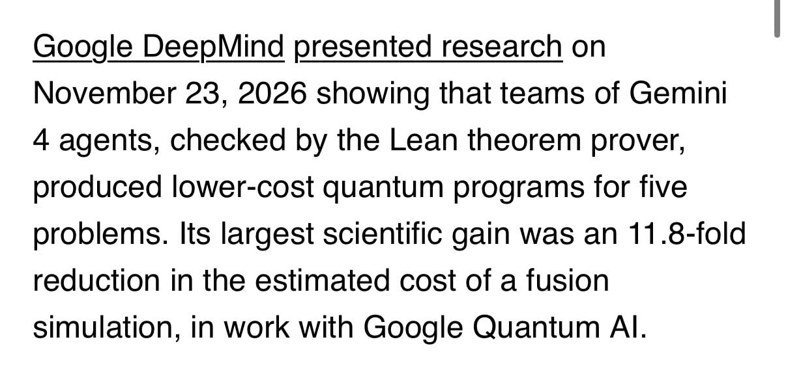

https://deepmind.google/blog/finding-faster-quantum-algorithms-with-agents-and-formal-verification/
제미나이4 스웜을 이용해서
양자컴으로 핵융합 시뮬 11.8배 가속하는 방법 발견했고
전부 Lean으로 형식화해서 검증까지 통과시킴

https://deepmind.google/blog/finding-faster-quantum-algorithms-with-agents-and-formal-verification/
제미나이4 스웜을 이용해서
양자컴으로 핵융합 시뮬 11.8배 가속하는 방법 발견했고
전부 Lean으로 형식화해서 검증까지 통과시킴
상용화된 핵융합발전소는 구글이 건설하나
와 이건 진짜 대박인데?(이해못함)
주가 11배는 언제 개발하냐
RSA 도 그렇고 지금 개꿀잼 몰카같음
솔까 보안업계는 RSA는 성역이였음
요즘 대책으로 양자보안 계속 나오던데
보안하려면 기존시스템 ㄹㅇ 다바꿔버려야함
가속해봐야겨우 11~12배
아앗 존나 빠르다앗!!! 다음주 휴재!!!
알아봤는데 전체 시뮬레이션 11.8배 가속은 아니고 특정 공정에서의 알고리즘을 11.8배 더 가속한거라고 함. 우리가 기대한 대도약은 아니지만 그래도 충분히 유의미한 성과긴 함. ai가 실제로 도움이 되었으니깐. 이런게 수십번 쌓이면 그게 결국 전체 공정 가속이지 뭐
평범한 행융합의 만 배 가치가 있는가? 가속해봐야 겨우 11.8배.
행성융합은 아직무리
발전소장을 불러라
빨리 가속해서 물을 끓이자!!
애미야 물좀 끓여다오
빨리 핵융합 나와서 전기 많이 싸졌으면 좋겠다
어림도 없지 데이터센터 500배 증설
그걸 또 시공하는건 다른문제
초전도체도 가자
1년뒤면 진짜 상상도 못하게 발전되겠네 ㄷㄷ
이정도인데 왜 탈모약 개발은 못하는거냐
가속 알고리즘이라 해봤자 겨우 11~12배.....
존나 빠르다아아앗
진짜 특이점이 온 건가...
내년 이맘때에는 무슨 ai 소식 나오려나 ㄷㄷ..
어떤의미임
개시팔련들아 왜 구글 1주석인데 씨발
특이점 오겠네 ㄷㄷ
인간 세상의 끝이 도래했도다
올해들어서 AI들이 존나 발전하는게 느껴짐 1년전만 해도 이정돈 아니었는데 요새 AI쓰고 있다보면 걍 여기서 발전이 멈춰도 세상이 존나 변하겠구나 싶음
근데 발전이 계속되면 어떻게 될지 솔직히 난 상상이 안됨
실제로 해봤더니 안되는데요 이러는거아님?
"노심에서 물러나. 장비를 정지합니다."
"정지하겠습니다."
"안 되잖아? 어? 정... 정지가 안 돼."
"정지시킬 수가 없어! 안 돼!"
린 증명은 수학은 확실하지만 그게 물리학도 되는 건가?
빠르다고 해봤자 10~11배
환각본거 아니지?
어차피 물끓이는건데 존나큰 돋보기 만들어서 팔팔끓이면 안되나?
https://ko.wikipedia.org/wiki/%EC%A7%91%EA%B4%91%ED%98%95_%ED%83%9C%EC%96%91%EA%B4%91_%EB%B0%9C%EC%A0%84
돋보기는 아니고 오목거울로 이미 하고 있긴 한데 경제성이 없어. 같은 태양광이어도 태양전지 발전이 더 싸게 먹힌다.
이렇게 핵융합으로 뽑은 전기로
다시 AI돌리기
특이점이 온건가
아이 진짜 이거 핵전쟁 날꺼같은데
LEAN이 수학 증명의 보조 도구였는데 주객전도된 느낌ㅋㅋㅋ AI가 LEAN으로 말씀을 내려주면 그게 무슨 뜻인지 사제들이 열심히 연구해야 됨ㅋㅋㅋ
에너지 무한의 시대 개막인가
시험 운행때 나오는 데이터 분석도 빨라지겠네
이게 어떻게 거품임...
뭔데 씨발 이건 또
원자력발전주 뜨냐